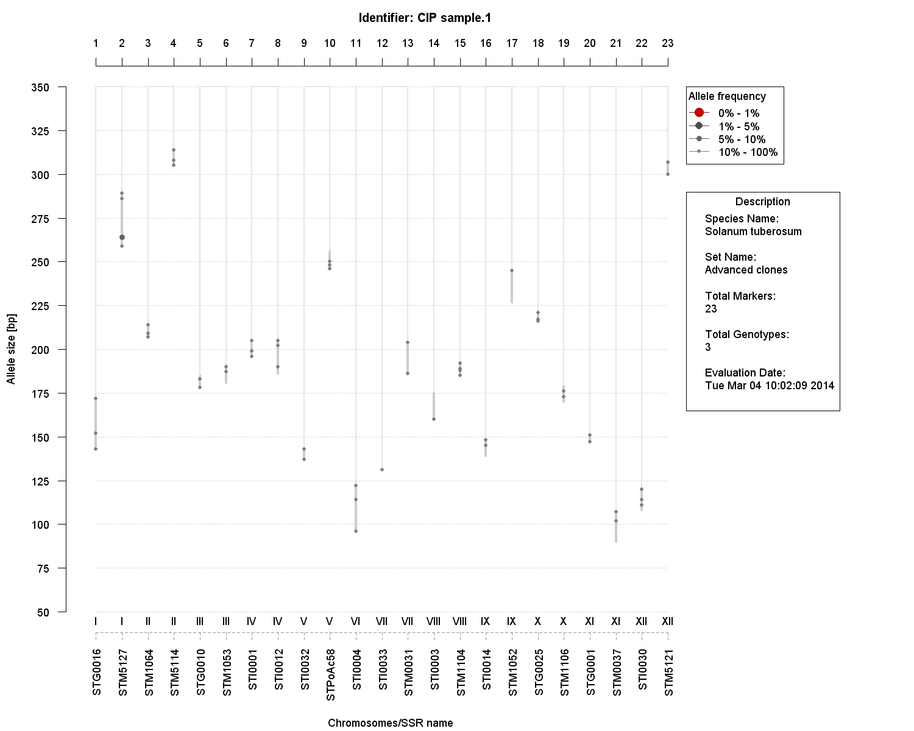
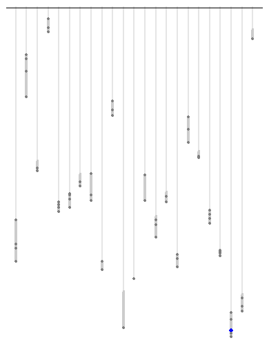

install.packages("devtools")
devtools::install_github("quipu", "c5sire")
quipu::runDemo()
library(quipu)
example(rquipu)
Right-click on link to download the tutorial.
Simon R*, Carhuapoma R, de Haan S, Ghislain M, Nuňez J, Zorilla C, Gomez R, de Mendiburu F, Roca W, Bonierbale M
The chart shows SSR marker weights on a linear scale where each allele or 'gel band' is represented by a circle. The circle's diameter is sized inversely by its rareness within the set of accessions in the database at hand and within that locus. The purpose is to facilitate the visual screening and comparison of genotypes with regard to these two questions:
What is the overall pattern of alleles in a genotype?
Which genotypes have rare alleles?
Genebanks increasingly use molecular markers for routine characterization of ex-situ collections and farmer managed diversity. CIP's (International Potato Center) genebank presently uses a SSR marker-kit to produce molecular profiles for potato accessions. We have been searching for a compact graphical representation that shows both molecular diversity and accession characteristics - thus permitting biologists and collection curators to have a simpler way to interpret high-volume data. Inspired by the ancient Andean quipus we devised a graph that allows for standardized representation while leaving room for updates of the marker kit and the collection of accessions. The graph has been used in several CIP publications.
A sample image showing a fully annotated chart (parameter 'layout = "full"':

A sample image showing a minimal chart (parameter 'layout = "no text"':
